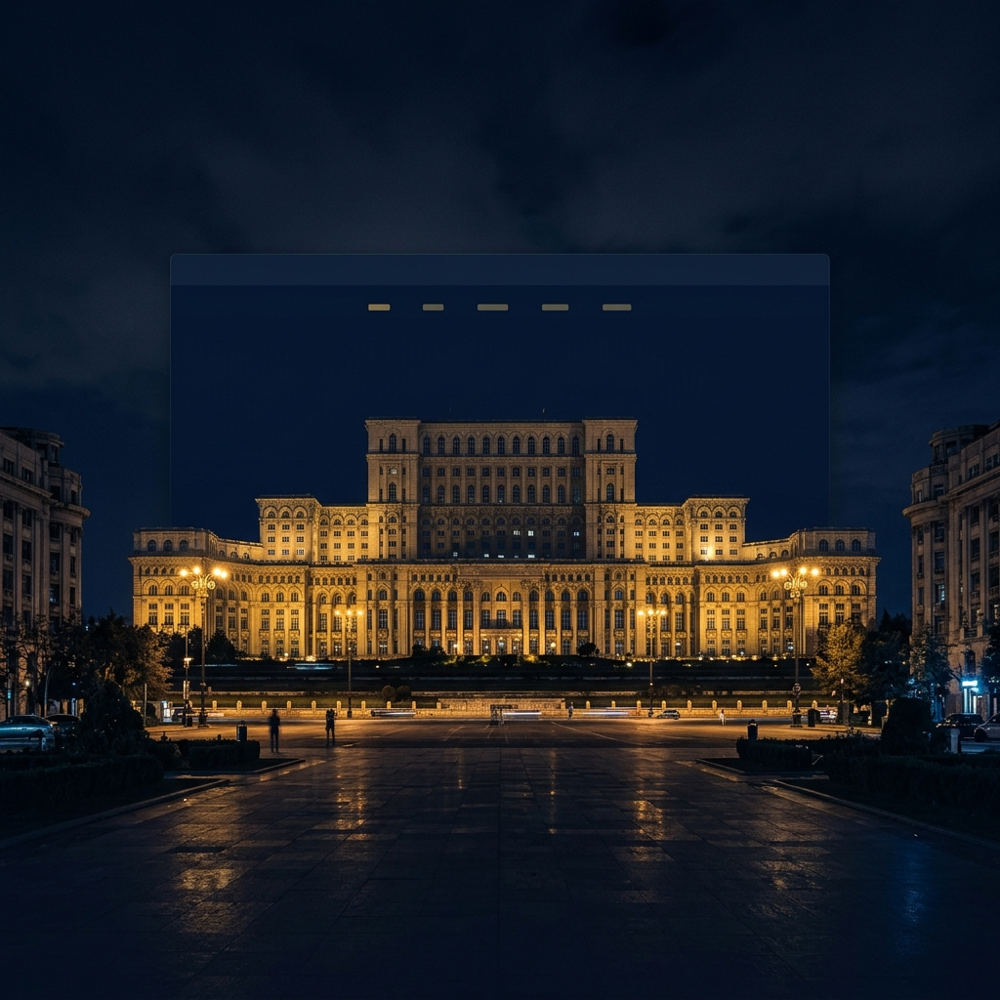
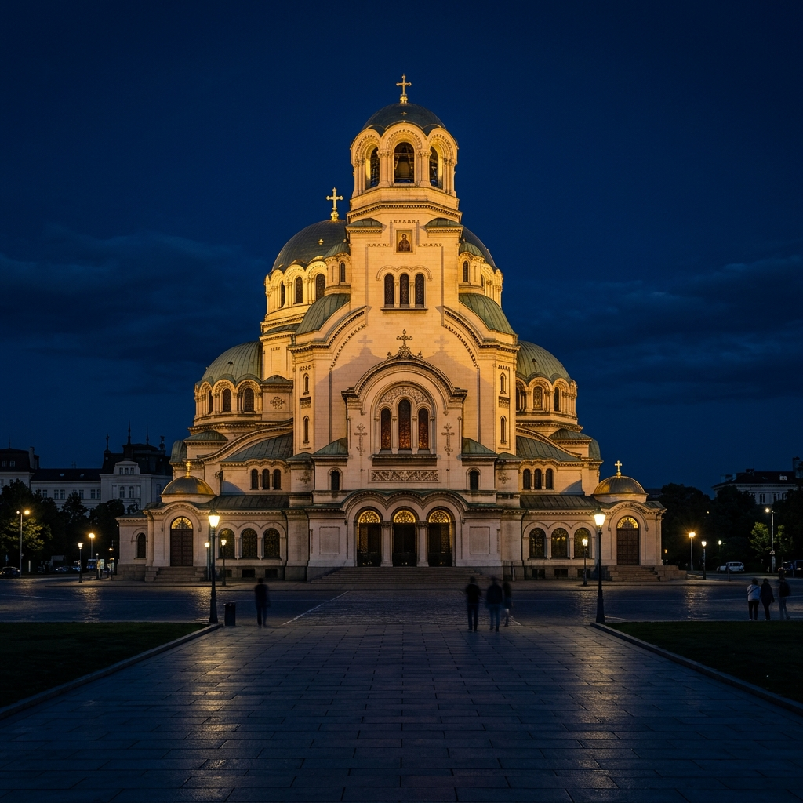
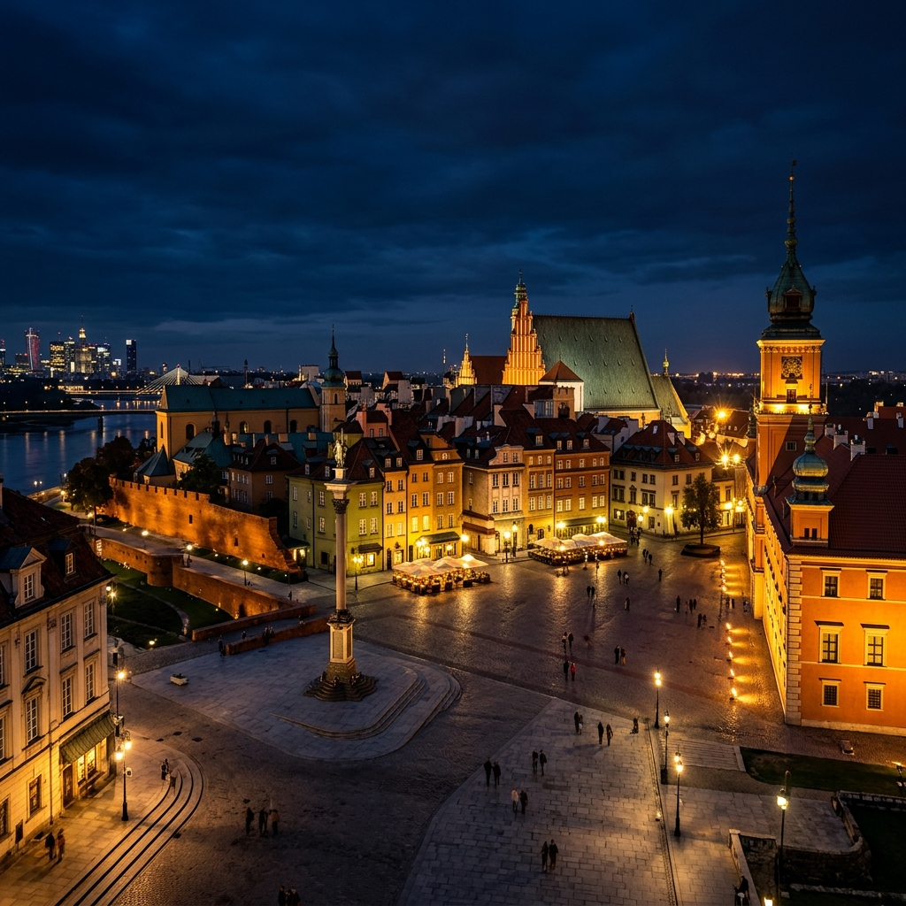
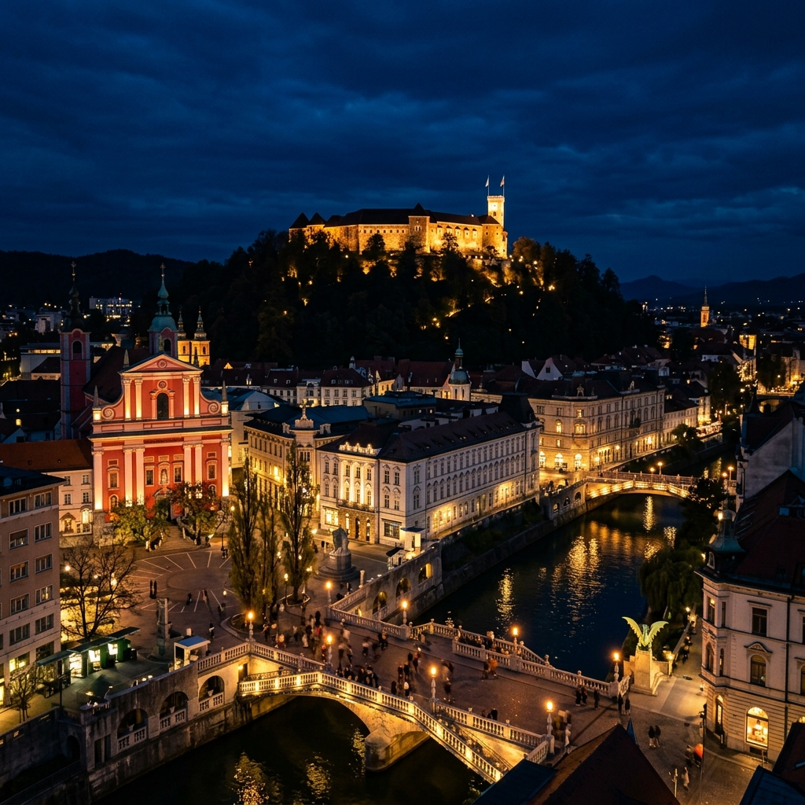
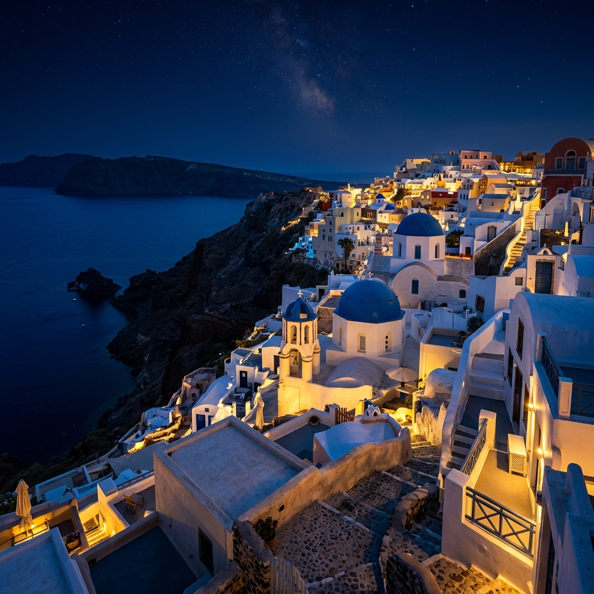

100% Защита данных
Ваши личные данные защищены на 100% договором о сотрудничестве с EuroStatus. Мы гарантируем безопасность, конфиденциальность и положительный результат.
Второе гражданство Румынии, Болгарии, Словении, Чехии, Греции и Польши для инвесторов и их семей. Свобода передвижения по 170+ странам мира, легальная жизнь, работа и бизнес в Европе (ЕС).
Прозрачные условия и полное юридическое сопровождение от EuroStatus.





Какие горизонты открывает второе гражданство для вас и вашей семьи
Возможность пользоваться всеми преимуществами и правами, которые доступны гражданам Евросоюза.
Право на льготное или бесплатное образование и повышение квалификации в престижных ВУЗах Европы.
Право на трудоустройство в любом государстве объединения и получение зарплаты наравне с гражданами ЕС.
Возможность приобретать недвижимость в любой стране Евросоюза по доступным ценам с минимальным налогом.
Возможность в любое время пересекать границы более чем 160 стран мира в безвизовом режиме.
Право пользоваться банковскими программами, открывать счета и оформлять кредиты на выгодных условиях.
Возможность пользоваться высококачественными медицинскими услугами в лучших европейских клиниках.
Возможность жить в стране с высокими социальными стандартами и при этом находиться под ее правовой защитой.
Надежное юридическое сопровождение от первой консультации до получения паспорта.
Ваши личные данные защищены на 100% договором о сотрудничестве с EuroStatus. Мы гарантируем безопасность, конфиденциальность и положительный результат.
Сотрудничество с EuroStatus предполагает выгодные условия для вас и ваших близких. Вы оплачиваете стоимость услуг наших юристов только после успешной подачи документов.
Представительства компании EuroStatus в 8-ми городах Европы и СНГ успешно работают и обслуживают клиентов уже более 10 лет.
Компания EuroStatus работает исключительно с государственными иммиграционными программами ЕС и предоставляет услуги строго по нормам закона.
Прозрачный и понятный процесс получения гражданства ЕС с EuroStatus.
Миграционный специалист компании EuroStatus подробно расскажет обо всех процедурах получения гражданства ЕС, ответит на интересующие вас вопросы и поможет выбрать программу, соответствующую вашим пожеланиям.
Уполномоченный юрист компании соберет все необходимые документы, при необходимости истребует дубликаты недостающих свидетельств, переведет их и легализирует, а также оформит в досье согласно всем законодательным нормам ЕС.
В назначенный день вам в сопровождении юриста EuroStatus нужно будет отправиться в государственное учреждение ЕС и лично подать свое досье. Специалисты компании предварительно проконсультируют вас по всем особенностям процедуры.
После положительного решения представителей госслужбы вам присвоят статус гражданина Евросоюза и выдадут соответствующий сертификат. Далее юристы компании помогут вам оформить внутренние документы ЕС.
Единственный статус, дающий вам абсолютные гарантии на ближайшие поколения.
| Права и привилегии | ВНЖ Европейской страны | Паспорт ЕС |
|---|---|---|
| Круглогодичное проживание в ЕС | ||
| Безвизовый въезд (США, Британия) | Только Шенген | |
| Трудоустройство без Work Permit | Строго в стране ВНЖ | Любая из 27 стран |
| Продление статуса | Каждые 1-3 года + экзамены | Пожизненно |
| Защита от аннуляции | Высокий риск потери | Защищено Конституцией |
Юридическая прозрачность на каждом этапе.
Оставьте заявку, и наш миграционный эксперт свяжется с вами для бесплатного аудита вашей ситуации или оценки наличия корней для репатриации.